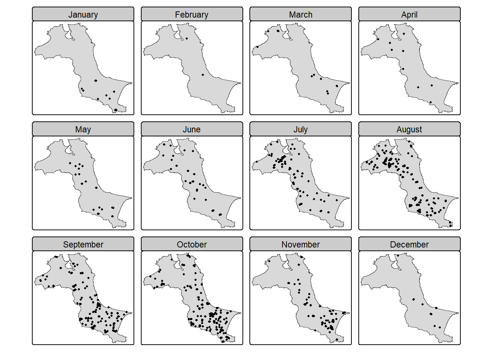

pacman::p_load(sf, raster, spatstat, sparr, tmap, tidyverse)Hands-on 3 | Spatio-Temporal Point Patterns Analysis
In this exercise, we will learn to analyze spatial point patterns in R, including importing geospatial data, performing kernel density estimation and nearest neighbor analysis, and visualizing results using spatstat, sf, and tmap packages.
1 Overview
A spatio-temporal point process is a random collection of points representing when and where events occur, such as diseases, animal sightings, or natural disasters like fires and earthquakes.
As location and time-indexed data becomes more common across fields, analyzing these spatial-temporal patterns is increasingly important. Various R packages now enable comprehensive analysis of such patterns. This exercise demonstrates how to combine these R tools for intuitive spatio-temporal analysis, using forest fire data from Kepulauan Bangka Belitung, Indonesia throughout 2023 as a practical example.
1.1 Learning Outcome
The specific questions we would like to answer are:
- Are the locations of forest fire in Kepulauan Bangka Belitung spatial and spatio-temporally independent?
- If the answer is NO, where and when the observed forest fire locations tend to cluster?
1.2 The Data
| Dataset | Description | Source | Format |
|---|---|---|---|
| forestfires | Locations of forest fire detected from the Moderate Resolution Imaging Spectroradiometer (MODIS) sensor data in 2023 | Fire Information for Resource Management System | CSV |
| Kepulauan_Bangka_Belitung | Sub-district (i.e. kelurahan) boundary of Kepulauan Bangka Belitung | Indonesia Geospatial | ESRI shapefile |
1.3 Installing and Loading the R packages
The following R packages will be used in this exercise:
| Package | Purpose |
|---|---|
| sf | Importing, managing, and processing vector-based geospatial data. |
| raster | Handling raster data |
| spatstat | Provides tools for point pattern analysis. |
| sparr | Getting functions to estimate fixed and adaptive kernel-smoothed spatial relative risk surfaces via the density-ratio method and perform subsequent inference |
| tmap | Getting functions to produce cartographic quality thematic maps |
| tidyverse | Getting functions to perform common data science tasks e.g. data import, data transformation, data wrangling and data visualisation |
To install sparr, use the following code:
install.packages("sparr")To load these packages in R, use the following code:
2 Importing and Preparing Study Area
2.1 Importing study area
kbb_sf <- st_read(dsn="data/rawdata",
layer = "Kepulauan_Bangka_Belitung") %>%
st_union() %>%
st_zm(drop = TRUE, what = "ZM") %>%
st_transform(crs = 32748)Reading layer `Kepulauan_Bangka_Belitung' from data source
`D:\ngoclinhnguyen-2806\ISSS626-GAA\Hands-on_Ex\Hands-on_Ex03\data\rawdata'
using driver `ESRI Shapefile'
Simple feature collection with 297 features and 26 fields
Geometry type: POLYGON
Dimension: XYZ
Bounding box: xmin: 105.1085 ymin: -3.116593 xmax: 106.8488 ymax: -1.501603
z_range: zmin: 0 zmax: 0
Geodetic CRS: WGS 842.2 Converting OWIN
as.owin() is used to convert kbb into an owin object.
kbb_owin <- as.owin(kbb_sf)
kbb_owinwindow: polygonal boundary
enclosing rectangle: [512066.8, 705559.4] x [9655398, 9834006] unitsNext, class() is used to confirm if the output is indeed an owin object.
class(kbb_owin)[1] "owin"3 Importing and Preparing Forest Fire data
Next, we will import the forest fire data set (i.e. forestfires.csv) into R environment.
fire_sf <- read_csv("data/rawdata/forestfires.csv") %>%
st_as_sf(coords = c("longitude", "latitude"),
crs = 4326) %>%
st_transform(crs = 32748)Because ppp object only accept numerical or character as mark. The code chunk below is used to convert data type of acq_date to numeric.
fire_sf <- fire_sf %>%
mutate(DayofYear = yday(acq_date)) %>%
mutate(Month_num = month(acq_date)) %>%
mutate(Month_fac = month(acq_date,
label = TRUE,
abbr = FALSE))4 Visualising the Fire Points
4.1 Overall plot
# add polygon layer of the subzone based on kbb masterplan
tm_shape(kbb_sf) + tm_polygons() +
# add dot layer to show the locations of fire points
tm_shape(fire_sf) + tm_dots() +
tm_layout()
4.2 Visuaising geographic distribution of forest fires by month
tm_shape(kbb_sf) + tm_polygons() +
tm_shape(fire_sf) + tm_dots() +
tm_facets(by = "Month_fac",
nrow = 3,
ncols = 4,
free.coords=FALSE, # Should each map has its own coordinate ranges?
drop.units=TRUE) + # Should non-selected spatial units be dropped?
tm_layout()
5 Computing STKDE by Month
In this section, we will learn how to compute STKDE by using spattemp.density() of sparr package.
5.1 Extracting forest fires by month
The code chunk below is used to remove the unwanted fields from fire_sf data frame. This is because ppp() only need the mark field and geometry field from the input .sf data frame.
fire_month <- fire_sf %>%
select(Month_num)
5.2 Creating ppp
The code chunk below is used to derive a ppp object called fire_month from fire_month dataframe.
fire_month_ppp <- as.ppp(fire_month)
fire_month_pppMarked planar point pattern: 741 points
marks are numeric, of storage type 'double'
window: rectangle = [521564.1, 695791] x [9658137, 9828767] unitsThe code chunk below is used to check the output is in the correct object class.
summary(fire_month_ppp)Marked planar point pattern: 741 points
Average intensity 2.49258e-08 points per square unit
Coordinates are given to 10 decimal places
marks are numeric, of type 'double'
Summary:
Min. 1st Qu. Median Mean 3rd Qu. Max.
1.000 8.000 9.000 8.579 10.000 12.000
Window: rectangle = [521564.1, 695791] x [9658137, 9828767] units
(174200 x 170600 units)
Window area = 29728200000 square unitsNext, we will check if there are duplicated point events by using the code chunk below.
any(duplicated(fire_month_ppp))[1] FALSE5.3 Including Owin object
The code chunk below is used to combine origin_am_ppp and am_owin objects into one.
fire_month_owin <- fire_month_ppp[kbb_owin]
summary(fire_month_owin)Marked planar point pattern: 741 points
Average intensity 6.42469e-08 points per square unit
Coordinates are given to 10 decimal places
marks are numeric, of type 'double'
Summary:
Min. 1st Qu. Median Mean 3rd Qu. Max.
1.000 8.000 9.000 8.579 10.000 12.000
Window: polygonal boundary
single connected closed polygon with 47493 vertices
enclosing rectangle: [512066.8, 705559.4] x [9655398, 9834006] units
(193500 x 178600 units)
Window area = 11533600000 square units
Fraction of frame area: 0.334As a good practice, plot() is used to plot ff_owin so that we can examine the correctness of the output object.
plot(fire_month_owin)
5.4 Computing Spatio-temporal KDE
Next, spattemp.density() of sparr package is used to compute the STKDE.
st_kde <- spattemp.density(fire_month_owin)
summary(st_kde)Spatiotemporal Kernel Density Estimate
Bandwidths
h = 15102.47 (spatial)
lambda = 0.0304 (temporal)
No. of observations
741
Spatial bound
Type: polygonal
2D enclosure: [512066.8, 705559.4] x [9655398, 9834006]
Temporal bound
[1, 12]
Evaluation
128 x 128 x 12 trivariate lattice
Density range: [1.233458e-27, 8.202976e-10]5.5 Plotting the spatio-temporal KDE object
In the code chunk below, plot() of R base is used to the KDE for between July 2023 - December 2023.

6 Computing STKDE by Day of Year
In this section, we will be computing the STKDE of forest fires by day of year.
6.1 Creating ppp object:
In the code chunk below, DayofYear field is included in the output ppp object.
fire_yday_ppp <- fire_sf %>%
select(DayofYear) %>%
as.ppp()
6.2 Including Owin object
Next, code chunk below is used to combine the ppp object and the owin object.
fire_yday_owin <- fire_yday_ppp[kbb_owin]
summary(fire_yday_owin)Marked planar point pattern: 741 points
Average intensity 6.42469e-08 points per square unit
Coordinates are given to 10 decimal places
marks are numeric, of type 'double'
Summary:
Min. 1st Qu. Median Mean 3rd Qu. Max.
10.0 213.0 258.0 245.9 287.0 352.0
Window: polygonal boundary
single connected closed polygon with 47493 vertices
enclosing rectangle: [512066.8, 705559.4] x [9655398, 9834006] units
(193500 x 178600 units)
Window area = 11533600000 square units
Fraction of frame area: 0.3346.3 Spatio-temporal Kernel Density Estimate
kde_yday <- spattemp.density(fire_yday_owin)
summary(kde_yday)Spatiotemporal Kernel Density Estimate
Bandwidths
h = 15102.47 (spatial)
lambda = 6.3198 (temporal)
No. of observations
741
Spatial bound
Type: polygonal
2D enclosure: [512066.8, 705559.4] x [9655398, 9834006]
Temporal bound
[10, 352]
Evaluation
128 x 128 x 343 trivariate lattice
Density range: [3.959516e-27, 2.751287e-12]7 Computing STKDE by Day of Year: Improved method
One of the nice function provides in sparr package is BOOT.spattemp(). It support bandwidth selection for standalone spatiotemporal density/intensity based on bootstrap estimation of the MISE, providing an isotropic scalar spatial bandwidth and a scalar temporal bandwidth.
Code chunk below uses BOOT.spattemp() to determine both the spatial bandwidth and the scalar temporal bandwidth.
set.seed(1234)
BOOT.spattemp(fire_yday_owin) Initialising...Done.
Optimising...
h = 15102.47 ; lambda = 16.84806
h = 16612.72 ; lambda = 16.84806
h = 15102.47 ; lambda = 1527.095
h = 15480.03 ; lambda = 771.9715
h = 15668.81 ; lambda = 394.4098
h = 15763.2 ; lambda = 205.6289
h = 15810.4 ; lambda = 111.2385
h = 15833.99 ; lambda = 64.04328
h = 15845.79 ; lambda = 40.44567
h = 15851.69 ; lambda = 28.64687
h = 15863.49 ; lambda = 5.049258
h = 15854.64 ; lambda = 22.74746
h = 15860.54 ; lambda = 10.94866
h = 15859.07 ; lambda = 13.89836
h = 14348.82 ; lambda = 13.89836
h = 13216.87 ; lambda = 12.42351
h = 12460.27 ; lambda = 15.37321
h = 10760.88 ; lambda = 16.11064
h = 8875.282 ; lambda = 11.68608
h = 10432.08 ; lambda = 12.97658
h = 7976.084 ; lambda = 16.66371
h = 9286.281 ; lambda = 15.60366
h = 9615.08 ; lambda = 18.73771
h = 9206.581 ; lambda = 21.61828
h = 8140.483 ; lambda = 18.23073
h = 8795.582 ; lambda = 17.70071
h = 9124.381 ; lambda = 20.83477
h = 9164.856 ; lambda = 19.52699
h = 8345.358 ; lambda = 18.48998
h = 9297.65 ; lambda = 18.67578
h = 8928.375 ; lambda = 16.8495
h = 9105.736 ; lambda = 18.85762
Done. h lambda
9105.73611 18.85762 7.1 Computing spatio-temporal KDE
Now, the STKDE will be derived by using h and lambda values derive in previous step.
kde_yday <- spattemp.density(fire_yday_owin,
h = 9000,
lambda = 19)
summary(kde_yday)Spatiotemporal Kernel Density Estimate
Bandwidths
h = 9000 (spatial)
lambda = 19 (temporal)
No. of observations
741
Spatial bound
Type: polygonal
2D enclosure: [512066.8, 705559.4] x [9655398, 9834006]
Temporal bound
[10, 352]
Evaluation
128 x 128 x 343 trivariate lattice
Density range: [2.001642e-19, 2.445724e-12]